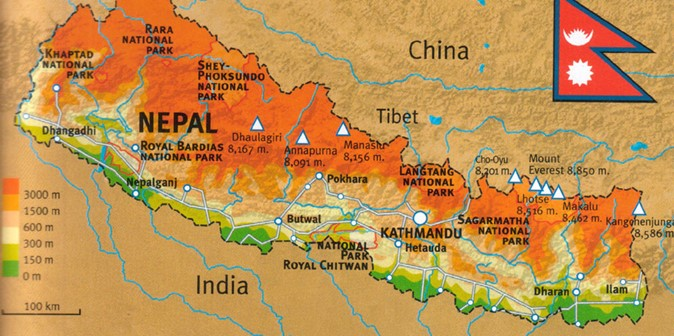

By Aakarshan Dahal
a coding begineer

GEOGRAPHY OF NEPAL:
Nepal, a landlocked country situated in South Asia, boasts a diverse and dramatic geography that spans from the soaring peaks of the Himalayas to the low-lying plains of the Terai region. Here is an overview of Nepal's geography:
Himalayan Region:
The northern border of Nepal is defined by the towering peaks of the Himalayan mountain range, including some of the highest mountains in the world. This region is characterized by snow-capped summits, deep valleys, and glaciers. Mount Everest, the highest point on Earth, stands proudly in this part of Nepal, attracting mountaineers and trekkers from around the globe.
Hill Region:
Moving south from the Himalayas, Nepal's topography transitions into the central Hill Region, where the landscape is marked by rolling hills, terraced fields, and picturesque valleys. This area is home to numerous ethnic communities, each contributing to the cultural tapestry of the country.
Terai Region:
The southernmost part of Nepal is the Terai, a low-lying plain that stretches along the border with India. This region is characterized by fertile lands, dense forests, and numerous rivers. The Terai is an essential agricultural area, producing crops such as rice, wheat, and sugarcane. It is also home to diverse wildlife, including endangered species like the Bengal tiger and the one-horned rhinoceros.
River Systems:
Nepal is the source of several major rivers that flow southward into India. The Himalayan rivers, including the Ganges, the Brahmaputra, and the Yamuna, originate in the mountainous regions of Nepal. These rivers play a vital role in the region's hydrology, agriculture, and culture.
Biodiversity:
The diverse geography of Nepal contributes to its rich biodiversity. From the alpine meadows in the Himalayas to the dense forests in the Terai, the country is home to a wide variety of flora and fauna. National parks and conservation areas, such as Chitwan National Park and Sagarmatha National Park, protect and showcase this biodiversity.
Earthquakes and Tectonics:
Nepal is located in a seismically active zone due to the convergence of the Indian and Eurasian tectonic plates. This geographical reality makes the country susceptible to earthquakes, as evidenced by the devastating earthquake in 2015 that caused widespread destruction.
In summary, Nepal's geography is a captivating blend of high mountain ranges, picturesque hills, fertile plains, and a network of rivers that collectively contribute to its natural beauty, cultural diversity, and ecological significance. This diverse landscape has shaped the lives of its people, influenced its cultural heritage, and established Nepal as a unique and enchanting destination.